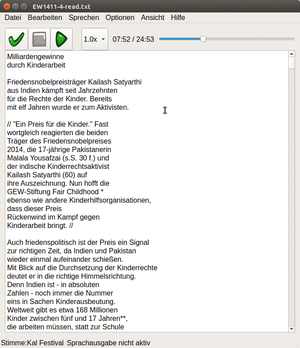

Omilo
Dieser Artikel wurde für die folgenden Ubuntu-Versionen getestet:
Ubuntu 14.04 Trusty Tahr
Zum Verständnis dieses Artikels sind folgende Seiten hilfreich:
Ein Terminal öffnen, optional
Einen Editor verwenden, optional
Root-Rechte, optional
Omilo  (abgeleitet vom griech. ομιλία - Sprache) ist ein Programm zur Textumwandlung, das Festival, Flite oder Open Mary als Sprachausgabe verwenden kann. Es ist in Qt5 verfasst und liefert englische (weiblich/männlich), deutsche, italienische, türkische und griechische Stimmausgaben. Es lassen sich beliebige Texte oder Textdateien in Sprache umwandeln und als Wave-Dateien abspeichern. Die grafische Oberfläche ist - bis auf wenige Ausnahmen - übersetzt.
(abgeleitet vom griech. ομιλία - Sprache) ist ein Programm zur Textumwandlung, das Festival, Flite oder Open Mary als Sprachausgabe verwenden kann. Es ist in Qt5 verfasst und liefert englische (weiblich/männlich), deutsche, italienische, türkische und griechische Stimmausgaben. Es lassen sich beliebige Texte oder Textdateien in Sprache umwandeln und als Wave-Dateien abspeichern. Die grafische Oberfläche ist - bis auf wenige Ausnahmen - übersetzt.
Installation¶
Omilo ist nicht in den Ubuntu-Paketquellen vorhanden. Es kann als deb-Paket (32/64-bit) von der Downloadseite  bezogen werden[1]. Die Mary-Stimmen werden direkt mitinstalliert, verwendet wird Version 5.0.
bezogen werden[1]. Die Mary-Stimmen werden direkt mitinstalliert, verwendet wird Version 5.0.
Hinweis!
Fremdpakete können das System gefährden.
Die Nutzung der Mary-Stimmen setzt eine Java-Installation voraus, als Abhängigkeit ist openjdk-jre-7 oder openjdk-jre-8 angegeben.
Konfiguration¶
Der Start[2] kann sich etwas verzögern, weil zunächst der Mary-Server via Java aktiviert werden muss, es erscheint zunächst nur das Logo mit einem Hinweis darauf. Im Panel nistet sich - zumindest unter Unity - ein Icon ein, über dass das Programm (mit  ) "wiederhergestellt" ("Restore") oder beendet werden kann.
) "wiederhergestellt" ("Restore") oder beendet werden kann.
Omilo bringt die verwendeten Sprachausgabeprogramme mit, sowohl Mary, Flite als auch Festival sind im Paket enthalten, was zu der nicht unerheblichen Größe von fast 80 MB für das Paket beiträgt. Im Hauptfenster im Menü "Optionen -> Installiere Stimmen" können neben den Standard-"Kal-Festival"-Stimme weitere englische/amerikanische Festival-Stimmen heruntergeladen und speziell für Omilo installiert werden. Eventuell bereits auf dem System vorhanden Festival-Installationen oder Stimmen können über einen Umweg (siehe unten) bei Bedarf auch genutzt werden. Unter "Flite-Einstellungen" können Angaben zur Nutzung der Flite-Ausgabe gemacht werden. Über "Ansicht" kann die Schrift im Editor fett ("bold") dargestellt werden, außerdem kann man ein "Negativ" mit schwarzem Hintergrund und weißer Schrift einstellen ("invert colors"), was ggf. für Menschen mit Sehbeeinträchtigungen besser zu erkennen ist.
Die Konfigurationswerte werden in der Datei ~/.config/Omilo-qt5/Omilo-qt5.conf gespeichert; dort kann bei Bedarf auch eine andere text2wave-Datei zur Erzeugung der Ausgabe-Wave-Datei angegeben werden[4], falls nötig. Allerdings muss trotzdem die passende festival-Datei verwendet werden, die sich in der Konfigurationsdatei allerdings bisher nicht festlegen lässt. Standardmäßig ist dort /usr/bin/text2wave eingetragen, also die des über das Paket festival installierte Datei; Omilo verwendet allerdings seine "eigene" Version, die Angabe also ggf. anpassen, damit die tatsächlich gewünschte Version genutzt wird.
Die Hilfefunktion ruft derzeit nur eine englischsprachige, und wenig aussagekräftige README-Datei im Standard-System-Editor auf.
Benutzung¶

Hauptbestandteil ist der Sprachausgabe-Editor. Am einfachsten kann man Omilo nutzen, indem man Text markiert (in irgendeinem Fenster) und dann mit F10 in das Omilo-Fenster importiert und wiedergibt. Unterbrechen kann man die Wiedergabe mit F11 , vorausgesetzt, "NUM-lock" ist ausgeschaltet.
Text kann außerdem über drag'n'drop direkt in das Fenster gezogen werden, per Tastatur geschrieben - oder korrigiert - werden, oder es werden Textdateien über "Datei -> Öffen" ausgewählt, Omilo erwartet UTF-8-codierte Texte. Die Bedienung erfolgt entweder über die Schaltflächen der Leiste oben oder über die entsprechenden Tastenkürzel. Vor Ausgabe sollte die gewünschte Stimme für die Wiedergabe ausgewählt werden. Bei längeren Texten kann etwas Zeit vergehen, bis die Wiedergabe startet! Unten im Fenster wird angezeigt, ob das Ausgabemodul noch arbeitet. Die Ausgabe lässt sich über die Pausentaste unterbrechen, diese Funktion ist allerdings bisweilen etwas zäh, die Wiedergabe startet nach Unterbrechung ggf. erst nach einigen Sekunden Wartezeit. Mit dem Schieberegler über dem Fenster kann in der Textausgabe navigiert werden.
Mit -Klick lässt sich im Kontextmenü - neben den üblichen Funktionen wie "Ausschneiden, Kopieren" und "Einfügen" auch markierter Text direkt wiedergeben ("Speak (selected text)") allerdings wird damit eine ggf. schon laufende Sprachausgabe unterbrochen, und müsste dann wieder neu gestartet werden.
Die Funktion "Sprechen -> Speak from current position" encodiert den Text ab der Cursorposition neu, und startet dann von dort mit der Sprachausgabe. Die Geschwindigkeit lässt sich während der Ausgabe nicht verändern, es kann aber vor der Sprachausgabe das Tempo eingestellt werden, entweder über das Auswahlmenü rechts neben der "Play/Pause"-Taste, oder über "Sprechen -> Absenkungs/Erhöhungsrate" (gemeint ist schneller/langsamer) oder ( Strg + 8 bzw Strg + 9 -Taste).
Änderungen am Text können gespeichert werden ("Datei -> Speichern" oder "Speichern unter...". Omilo fragt bei Aufruf anderer Dateien nochmal explizit nach. Bis zur Erstellung einer neuen Sprachausgabe bleibt allerdings die alte Wave-Datei aktiv.
Die Sprachausgaben der Texte können auch als Wave-Datei abgespeichert werden ("Datei -> Als Wave-Datei exportieren"). Die Datei kann dann frei benannt und in jedem beschreibbaren Verzeichnis abgelegt werden.
Probleme und Lösungen¶
Verwenden der deutschsprachigen Festival-Version¶
Um die deutsche IMS-Festival-Version mit Omilo sinnvoll zu nutzen, kann man das Programm im Terminal[3] mit der Sprachanweisung LANG=de_DE.iso88591 omilo-qt5 aufrufen, ansonsten werden die Umlaute/ß-Zeichen nicht richtig angezeigt und wiedergeben. Omilo setzt die text2wave-Funktion von Festival ein, allerdings muss für eine deutsche Ausgabe die IMS-Version des Programms verwendet werden. Dazu die "Original"-text2wave-Datei in /usr/share/omilo-qt5/festival/bin/ ersetzen, eine symbolische Verknüpfung auf die IMS-Version von text2wave setzen (Root-Rechte[5] erforderlich) - oder in der ~/.config/Omilo-qt5/Omilo-qt5.conf den Pfad zur gewünschten text2wave-Datei angeben. Außerdem ebenfalls die "deutschsprachige" festival-Programmdatei verwenden, oder einen Link auf die gewünschte festival-Datei erstellen. In Omilo lässt man die Stimmen-Einstellung auf "Kal Festival", die tatsächliche Einstellung kann dann über die .festivalrc im Homeverzeichnis des angemeldeten Benutzers erfolgen (siehe Sprache/Stimme festlegen). Wenn in die verwendete Festival-Version integriert, können da natürlich auch andere Stimmen eingestellt werden.
Bei Fehlern wird ggf. die Erstellung der wave-Datei abgebrochen, siehe bei Festival - Probleme.
Sprachauswahl für Festival¶
Auch die in Omilo mitgelieferte Festival-Version verwendet für die Stimmauswahl - so vorhanden - die Datei ~/.festivalrc. Wenn die dort eingestellte Stimme nicht der in Omilo gewählten Festival-Stimme entspricht, wird nichts ausgegeben (bzw. ggf. eine andere Stimme verwendet). Wenn das Programm im Terminal gestartet wurde, erscheint ggf. ein Hinweis zu einer "unbound variable" in Festival, falls die Stimme nicht nutzbar ist.
Fehlermeldung beim Start im Terminal¶
Eine Fehlermeldung in dieser Art erscheint beim Start im Terminal; allerdings scheint sie keine Auswirkungen auf die Funktion des Programms zu haben:
qt.network.ssl: QSslSocket: cannot resolve SSLv2_client_method qt.network.ssl: QSslSocket: cannot resolve SSLv2_server_method
Auch eine Meldung
QXcbWindow: Unhandled client message: "_COMPIZ_TOOLKIT_ACTION"
scheint keine weiteren Folgen zu haben.
Tastenkürzel¶
| Omilo, Text to Speech | ||||
| Tasten | Funktion | Tasten | Funktion | |
| F10 | markierten Text importieren und wiedergeben | F11 | Wiedergabe unterbrechen | |
| Strg + N | "Datei -> Neu" | Strg + O | "Datei -> Öffnen..." | |
| Strg + S | "Datei -> Speichern" | Strg + E | "Datei -> Als Wave-Datei exportieren..." | |
| Strg + Q | "Datei -> Beenden" | |||
| Strg + Z | "Bearbeiten -> Rückgängig" | Strg + ⇧ + Z | "Bearbeiten -> Wiederholen" | |
| Strg + X | "Bearbeiten -> Ausschneiden" | Strg + C | "Bearbeiten -> Kopiern" | |
| Strg + V | "Bearbeiten -> Einfügen" | Alt + C | "Bearbeiten -> Löschen" | |
| Strg + A | "Bearbeiten -> Alle auswählen" | F1 | "Hilfe -> Hilfe" | |
| F2 | "Sprechen -> Sprechen" | F12 | "Sprechen -> Abbruch" | |
| F3 | "Sprechen -> Stimme auswählen" | Strg + 1 | "Sprechen -> Stop" | |
| Strg + 3 | "Sprechen -> Wiedergabe/Pause" | Strg + 8 | "Sprechen -> Absenkungsrate" | |
| Strg + 9 | "Sprechen -> Erhöhungsrate" | Strg + 1 | "Sprechen -> Speak from current position" (Ab Cursor wiedergeben) | |
| F4 | "Optionen -> Installiere Stimmen..." | F5 | "Optionen -> Flite-Einstellungen..." | |
| Strg + B | "Ansicht -> Bold (fett)" | Strg + I | "Ansicht -> Invert Color" ("Negativ" darstellen) | |
| Kontextmenü im Editor () | ||||
| Strg + X | "Ausschneiden" | Strg + C | "Kopieren" | |
| Strg + V | "Einfügen" | F7 | "Speak (selected text)" (Markierten Text sprechen) | |

- Erstellt mit Inyoka
-
 2004 – 2017 ubuntuusers.de • Einige Rechte vorbehalten
2004 – 2017 ubuntuusers.de • Einige Rechte vorbehalten
Lizenz • Kontakt • Datenschutz • Impressum • Serverstatus -
Serverhousing gespendet von